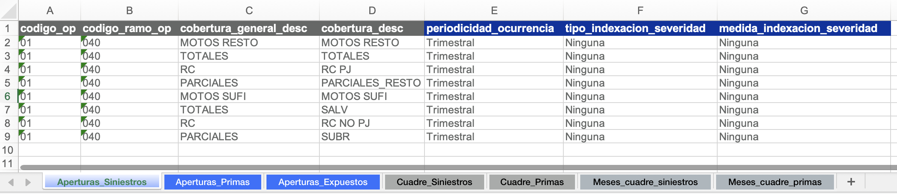
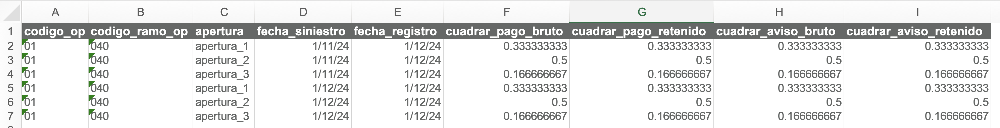

El archivo segmentación
Este es un archivo de Excel con tres objetivos:
- Definir las aperturas de siniestros, primas, y expuestos para el análisis.
- Parametrizar el cuadre contable contra SAP (opcional).
- Almacenar tablas de aperturas para cargar en queries de Teradata (opcional).
Ejemplos
Consulte ejemplos reales de archivos de segmentación utilizados para los cierres contables.
Definir aperturas
¿Qué es una apertura?
Una apertura es un nivel de desagregación del producto a analizar.
Ejemplo
En un seguro de salud, podría analizarse cada cobertura por separado (laboratorios, diagnósticos, cirugías) o agruparlas en categorías con comportamientos similares. En ese caso, decimos que estamos "aperturando" por cobertura.
Tablas de aperturas
En el archivo de segmentación, cree las siguientes hojas con sus respectivas tablas de aperturas:
- Apertura_Siniestros
- Apertura_Primas
- Apertura_Expuestos
Advertencia
Cada tabla debe incluir obligatoriamente las columnas:
- codigo_op (código de la compañía)
- codigo_ramo_op (código del ramo)
Estas columnas son necesarias para realizar las comparaciones contra SAP.
Propiedades de las aperturas
Aperturas de siniestros
En la hoja Apertura_Siniestros, para cada apertura se debe definir:
-
Periodicidad de ocurrencia: Granularidad del triángulo y del entremés. Valores disponibles:
- Mensual
- Trimestral
- Trimestral (Feb - Abr | May - Jul | Ago - Oct | Nov - Ene)
- Trimestral (Mar - May | Jun - Ago | Sep - Nov | Dic - Feb)
- Semestral
- Semestral (Feb - Jul | Ago - Ene)
- Semestral (Mar - Ago | Sep - Feb)
- Semestral (Abr - Sep | Oct - Mar)
- Semestral (May - Oct | Nov - Abr)
- Semestral (Jun - Nov | Dic - May)
- Anual
- Anual (Feb - Ene)
- Anual (Mar - Feb)
- Anual (Abr - Mar)
- Anual (May - Abr)
- Anual (Jun - May)
- Anual (Jul - Jun)
- Anual (Ago - Jul)
- Anual (Sep - Ago)
- Anual (Oct - Sep)
- Anual (Nov - Oct)
- Anual (Dic - Nov)
-
Tipo de indexación de la severidad: Metodología de indexación que se utilizará para calcular la severidad. Puede tomar tres valores:
- Ninguna
- Por fecha de ocurrencia
- Por fecha de movimiento
-
Medida de indexación de la severidad: Nombre del indicador a usar para la indexación (si aplica).
Ejemplo

Aperturas de primas y expuestos
En las hojas Aperturas_Primas y Aperturas_Expuestos, se debe incluir una columna adicional: apertura_redundante (VERDADERO / FALSO).
Esta columna indica si una apertura contiene información ya incluida en otras aperturas.
¿Qué es una apertura redundante?
Una apertura es redundante cuando su información puede obtenerse sumando otras aperturas. Esto es clave para evitar:
- Doble conteo
- Errores en controles
- Diferencias artificiales frente a SAP o análisis históricos
Ejemplo
Supongamos un análisis de autos con las siguientes aperturas:
- Cobertura: "RC" y "Daños"
-
Tipo de negocio: "Individual", "Colectivo", "Financieras"
-
Los siniestros se analizan por ambas dimensiones
- Las primas sólo por tipo de negocio
- La cobertura RC se analiza de forma agregada ("Todos")
La tabla en Apertura_Primas sería:
| codigo_op | codigo_ramo_op | tipo_negocio | apertura_redundante |
|---|---|---|---|
| 01 | 040 | Individual | FALSO |
| 01 | 040 | Colectivo | FALSO |
| 01 | 040 | Financieras | FALSO |
| 01 | 040 | Todos | VERDADERO |
La fila RC - Todos es redundante porque equivale a la suma de las demás aperturas.
Parametrizar el cuadre contable
Tip
Si no realizará cuadre contable, puede omitir esta sección.
Aperturas y periodos para repartir diferencias
Cree dos hojas:
- Cuadre_Siniestros
- Cuadre_Primas
En cada una incluya una tabla con:
- Las aperturas.
- La fecha de ocurrencia (sólo para Cuadre_Siniestros).
- Todos los meses de movimiento esperados.
- Columnas para especificar el peso de repartición de cada una de las cantidades en cada apertura-ocurrencia.
Si una cantidad no debe cuadrarse en un periodo contable determinado, deje el valor en 0 para todas las aperturas y fechas de ocurrencia correspondientes.
Si el valor de la ponderación suma más que 1 para un periodo contable, el sistema lo normalizará automáticamente.
Ejemplo
Supongamos que tenemos una diferencia de $100 para el periodo contable 202412 y queremos repartirla por igual en las ocurrencias de 202411 y 202412. Adicionalmente, queremos que 1/3 se asigne a la "apertura_1", 1/2 a la "apertura_2", y 1/3 a la "apertura_3". En ese caso, la hoja se podría parametrizar así:

Tablas para cargar en queries
Tip
Si no va a extraer información de Teradata, omita esta sección.
Las tablas y el formato requerido se describen en la guía de construcción de queries.